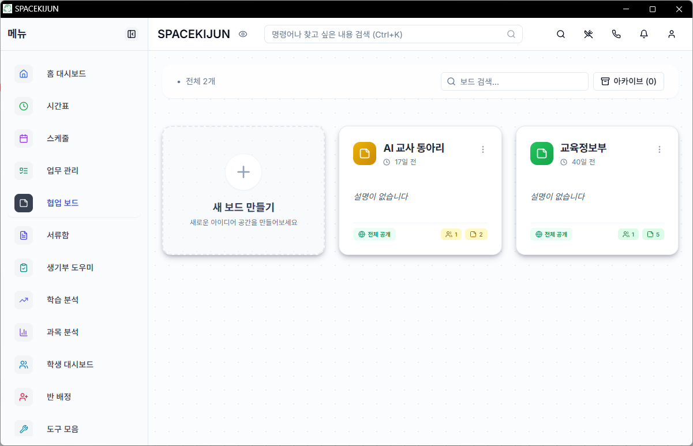

에이전틱 인공지능과
교육 혁신
스스로 계획하고 실행하는 AI와 교사의 새로운 파트너십
단순한 답변 생성을 넘어, 목표를 스스로 이해하고 실행하는 AI와 함께
교육 업무의 새로운 가능성을 발견합니다.
🌟 선생님, 두려워하지 마세요
인공지능은 선생님의 전문성을 돕는 가장 따뜻한 도구입니다.

"기술은 차갑지만,
교육은 따뜻합니다."
에이전틱 AI는 선생님을 밀어내는 것이 아니라,
복잡하고 반복적인 업무를 대신 짊어짐으로써
선생님이 학생들의 눈을 한 번 더 맞출 수 있는 시간을
선물해 드리고자 합니다.
이 여정은 완벽함이 아닌 '시도'에서 시작됩니다.
함께 설레는 마음으로 시작해 볼까요?
주요 학습 내용
동아리 연수 로드맵
- 01 에이전틱 AI(Agentic AI)의 개념 이해
- 02 교육 현장의 에이전틱 혁신 사례
- 03 핵심 가치: 에이전트를 다루는 역량
- 04 필수 환경 구성 상세 가이드 (4단계)
- 05 첫 번째 실습: AI 기반 프레젠테이션 자동화
- 06 AI 교사 동아리 협업 보드 및 결과 공유
🧠 에이전틱 AI란 무엇인가?
챗봇을 넘어선 능동적인 인공지능 에이전트
수동적 AI (LLM)
사용자의 질문에 답변만 생성합니다. 결과물을 직접 복사해서 활용해야 하는 수동적인 단계입니다.
에이전틱 AI (Agentic AI)
목표를 주면 스스로 계획을 세웁니다. 내 컴퓨터의 파일을 직접 읽고 쓰며 문제를 해결합니다.
🏫 교육 현장의 에이전틱 혁신
교사의 시간을 확보해주는 자동화 사례
수업 자료 자동 제작
학습 주제만 전달하면 관련 자료를 검색하고 구조화된 발표 자료를 폴더에 직접 생성합니다.
성적 데이터 분석
엑셀 성적표를 읽고, 각 학생별 강약점을 분석하여 개인별 맞춤 피드백 문서를 수십 건 일괄 작성합니다.
평가 기록 지원
수행평가 관찰 기록을 분석하여 학교생활기록부 기재 요령에 맞는 초안을 자동으로 제안합니다.
행정 업무 간소화
기존 공문 파일을 학습하여 새로운 학교 사업 안내장이나 기안문 뼈대를 즉시 구성합니다.
🎯 이번 연수의 진짜 목적
단순한 결과물 생성을 넘어선 '에이전트 제어 역량'
결과물보다 '에이전트를 다루는 힘'이 핵심입니다.
에이전틱 AI에게 명확한 목표를 부여하고, 적절한 도구(Skill)를 제공하며,
협업의 과정을 주도적으로 조율하는 역량을 기르는 것이 진짜 목표입니다.
단순히 AI가 만들어준 PPT 한 벌을 얻는 것은 중요하지 않습니다.
문제 해결을 위해 AI 에이전트를 어떻게 활용하고 제어할 것인지에 대한
'에이전틱 오케스트레이션' 감각을 익히는 것이 선생님의 미래 역량이 됩니다.
🛠️ 에이전틱 작업실 구축 (4단계)
선생님과 AI가 함께 일할 공간을 준비합니다
VS Code (편집기)
모든 작업이 이루어지는 기본 공간입니다. 코드와 결과물을 즉시 확인합니다.
Git & GitHub
파일의 변화를 기록하고, 실수해도 언제든 원래대로 되돌리는 안전장치입니다.
Claude Code AI
명령창에서 내 지시를 받아 직접 파일을 생성하고 수정하는 실행 에이전트입니다.
Presentation Skill
AI에게 '학교 수업용 PPT 만드는 전문 지식'을 주입하는 과정입니다.
🖥️ 1단계: VS Code 설치 및 설정
우리의 메인 작업 도구를 준비합니다
한국어 팩 및 Live Server
1. 왼쪽 네모 아이콘 클릭 ➔ "Korean" 검색 후 설치 ➔ 재시작
2. 같은 메뉴에서 "Live Server" 검색 후 설치 (PPT 확인용)
💡 팁: 상단 메뉴 [터미널 ➔ 새 터미널]을 누르면 나타나는 아래쪽 창이 AI에게 명령을 내릴 공간입니다.
🌿 2단계: Git & GitHub Desktop
안전한 기록 관리를 위한 토대 마련
내 프로젝트 폴더 생성
GitHub Desktop에서 [File ➔ New repository]를 선택하고 ai-education이라는 이름으로 새 폴더를 만듭니다.
🤖 3단계: Claude Code AI 전문가 영입
명령어 한 줄로 끝내는 AI 에이전트 설치
터미널(검은 창)에 복사해서 붙여넣으세요:
curl -fsSL https://claude.ai/install.cmd -o install.cmd && install.cmd && del install.cmd
AI 실행하기
설치 후 claude 라고 입력하고 Enter를 누르세요. 브라우저가 열리면 승인 버튼을 누르면 됩니다.
작동하지 않나요?
설치 직후에는 명령어를 인식하지 못할 수 있습니다. VS Code를 껐다가 다시 켜보세요.
⚠️ 트러블슈팅: 환경변수(PATH) 수동 추가
명령어를 입력해도 '인식할 수 없는 명령어'라고 뜰 때 해결법
시스템 환경 변수 검색
윈도우 검색창에 '환경 변수'를 입력하고 ➔ '시스템 환경 변수 편집'을 실행합니다.
변수 편집 창 진입
하단의 [환경 변수] 버튼 클릭 ➔ '사용자 변수' 목록에서 'Path' 선택 ➔ [편집] 클릭
경로 추가
[새로 만들기] 버튼 클릭 ➔ 아래 경로를 복사하여 붙여넣습니다.%AppData%\npm
완료 및 재시작
모든 창의 [확인] 버튼을 누르고 ➔ 반드시 VS Code를 껐다가 다시 켭니다.
📊 4단계: 전문 스킬(Skill) 부여
AI에게 선생님의 업무 방식을 학습시킵니다
지침서 준비
아래 버튼을 눌러 스킬 파일을 다운로드하고 압축을 풉니다. 압축 해제된 모든 파일과 폴더를 복사(Ctrl+C)하세요.
Skill 파일(.zip) 다운로드지정 경로에 붙여넣기
C:\Users\이름\.claude\commands 경로를 찾아 복사한 모든 내용을 붙여넣습니다.
💡 참고: 폴더가 보이지 않는다면 탐색기 상단 [보기 ➔ 숨긴 항목]을 체크해 주세요.
🚀 첫 번째 에이전틱 실습
방금 구축한 환경으로 직접 PPT를 생성해봅시다
Command to type:
claude
/presentation-builder 정보 수업을 위한 'AI 윤리' 자료를 만들어줘. 중학생 대상이고 시각적으로 세련되게 10장 정도로 구성해줘.
명령어 한 줄로 AI가 기획부터 제작까지 수행하는
진정한 에이전틱 인공지능을 경험해 보세요!
🧩 Claude Skill이란 무엇인가?
AI의 능력을 확장하는 '업무 지침서'
지식과 도구의 결합
AI에게 특정 작업을 수행하는 데 필요한 전문 지식과 사용할 수 있는 도구(파일 읽기, 명령어 등)를 정의한 파일입니다.
직관적인 비유
요리사에게 주는 '특별 레시피' 또는 신입 사원에게 건네주는 상세한 '업무 매뉴얼'과 같습니다.
방금 설치한 presentation-builder.md는 Claude에게 "한국 교육 현장에 딱 맞는 세련된 프레젠테이션을 만드는 법"을 가르친 맞춤형 스킬입니다.
스킬을 통해 우리는 AI의 행동을 표준화하고, 복잡한 작업을 명령어 한 줄로 해결할 수 있습니다.
✨ Presentation Builder & Skill 확장
에이전트의 능력을 이해하고 나만의 노하우 전수하기
📏 스킬에 포함된 내용 예시
초/중/고 학생, 교사 등 청중에 맞춘 어휘와 정중한 문체 적용
투사 환경을 고려한 폰트 크기(22px+)와 명확한 색상 대비 준수
정보의 특성에 맞춰 타임라인, 비교표, 스텝박스 등 자동 선택
이모지 예산제(슬라이드당 3개)로 깔끔하고 전문적인 레이아웃 유지
👨🏫 나만의 노하우 가르치기
선생님의 노하우를 전달하여 AI의 업무 지침을 실시간으로 업데이트하세요.
실전 프롬프트 예시
• "수업 목표는 항상 큰 뱃지 형태로 강조해줘"
• "설명 대신 퀴즈 카드를 2개씩 배치하는 로직을 추가해줘"
🌐 프레젠테이션 웹에 공유하기
생성된 결과물을 전 세계 어디서든 볼 수 있게 웹 사이트로 배포합니다.
🚀 1단계: 코드 업로드
1. 왼쪽 하단 Summary 칸에 "Create Slide" 입력
2. 파란색 Commit to main 버튼 클릭 (내 컴퓨터에 저장)
3. 상단 Push origin 클릭 (GitHub 서버로 전송)
🌍 2단계: 웹 사이트로 활성화
1. GitHub 저장소 상단 Settings ➔ 왼쪽 Pages 메뉴 클릭
2. Branch 섹션에서 None을 main으로 변경 후 Save 클릭
3. (필수) 저장소가 Private인 경우 General 메뉴 최하단 Change visibility에서 Public으로 변경해야 접속이 가능합니다.
🔗 내 웹 사이트 대표 주소
https://[GitHub-ID].github.io
💡 부록: 클로드 코드 활용 팁
더 빠르고 스마트하게 AI 에이전트를 사용하는 방법
⌨️ 입력 및 실행 팁
프롬프트를 작성할 때 줄을 띄우고 싶다면 사용하세요. 더 구조적인 명령이 가능해집니다.
이전 작업의 맥락을 유지한 채 실행합니다. (Compact mode)
파일 경로를 입력할 때 Tab을 누르면 자동으로 완성되어 오타를 줄여줍니다.
🛠️ 고급 기능 활용
@파일명 또는 @폴더명을 입력하여 AI가 특정 자료를 집중적으로 참고하게 만드세요.
/plugins로 새로운 기능을 탐색하거나, /pptx 등 설치된 스킬을 즉시 실행하세요.
/help를 입력하면 사용 가능한 모든 명령어 목록을 볼 수 있습니다.
📋 AI 교사 동아리 협업 보드 안내
우리들의 결과물을 함께 나누고 소통하는 공간입니다.

🌐 접속 및 공유 방법
Spacekijun 접속
Spacekijun 바로가기
[협업 보드] 메뉴 ➔ [AI 교사 동아리] 보드 입장
"생성한 수업 페이지 공유" 노트에 댓글로 본인의 수업 페이지 주소를 올려주세요!
경청해 주셔서 감사합니다
선생님의 혁신적인 AI 파트너십을 응원합니다.
💡 기억하세요
AI는 단순한 검색기가 아닌 유능한 조교입니다. 명확하게 지시하고 계속해서 피드백을 주세요.
📌 다음 단계
수업 자료를 넘어 데이터 분석, 복잡한 행정 문서 등 반복 업무를 AI에게 맡겨보세요.
전주기전여자고등학교 AI 전문적학습동아리